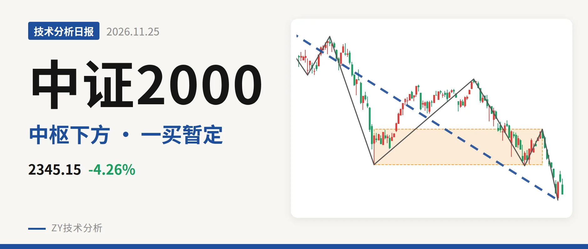
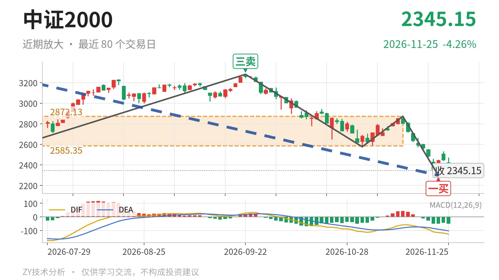

中证2000｜一买暂定2297点，反抽能否回中枢定方向

最近日线中枢 2585.35—2872.13点，收盘位于中枢之下
一句话：日线一买暂定2297点，反抽不进2585点构成三卖
📉 走势结构：下跌段未完，一买暂定
5月14日至11月23日的日线下跌线段从3768.08点跌至2297.27点，跌39%，还在延续。这段下跌嵌在2024年2月6日以来的更大级别上涨走势中，属于上涨途中的深度回调。更大级别上涨从1503.44点起步，涨幅一度超150%，当前回调已回吐近四成。
11月23日低点2297.27点，日线笔级别是一买，日线线段级别是类二买，两个级别买点重合。但所在下跌笔已经结束，之后11月24日至25日两根K线最高2533.82点、收2345.15点，尚未成笔。一买暂定，若后续创新低将被破坏。

📊 中枢与位置：中枢下移，收盘跌出中枢
7月21日至11月12日的日线笔中枢区间2585.35—2872.13点，中轴2728.74点。最新收盘2345.15点低于中枢下沿9.3%。此前中枢从1月26日至3月23日的3381.36—3593.19点下移至7月至11月的2585—2872点，中枢下移格局明确。
收盘2345.15点距2024年11月至2025年6月中枢上沿2293.12点约52点，前中枢上沿区域构成参考支撑。
🔍 背驰：新低不新弱，绿柱面积骤减
比较最近两段同向下跌笔。9月22日至11月2日的下跌笔从3280.29点跌至2576.02点，绿柱面积873，DIF低点-108.5。11月12日至11月23日的下跌笔从2872.13点跌至2297.27点，绿柱面积137，DIF低点-115.7。
价格新低，绿柱面积从873骤减至137，缩减超过八成。DIF低点-115.7略低于前笔-108.5，但绿柱面积大幅萎缩，新低不新弱，一买有结构支撑。

⚡ 关键位置：反抽进不进中枢决定方向
11月24日至25日反弹最高2533.82点，尚未触及中枢下沿2585点。后续若反抽仍回不到2585点上方，结构上构成三卖，下跌段还将继续。若重新站上2585点，下跌更可能只是中枢扩展，在2585—2872点区间震荡。
11月2日至11月12日的上涨笔从2576.02点反弹至2872.13点，曾回到中枢内部。本轮反弹若力度弱于前次，反抽进中枢的难度更大。
向下看，2297点是一买位置，若被跌破，一买失效，下方参考2024年9月18日类二买1659点一线。当前结构中性偏强：一买暂定且背驰信号明确，但尚未回到中枢内部。
⚠️ 本文为基于公开行情数据的缠论技术结构记录，由程序自动计算并生成，仅供学习交流，不构成任何投资建议。市场有风险，投资需谨慎。